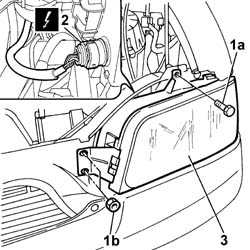

5540B10 EXTERIOR LIGHT DIMMER RESISTOR - R+R
- Path
- Procedures > 55 ELECTRICAL EQUIPMENT > 5540 EXTERIOR LIGHTING > 5540B HEADLAMPS > 5540B10 EXTERIOR LIGHT DIMMER RESISTOR - R+R
- Kind
- repair procedure (removal / refitting; the operation number is the code)
- Applies to
- all engines; all production periods
- Interactive page
- https://sloeber94.github.io/elrnDB-fDct/en/#/244001372
Applies to: all engines; all production periods
 Removing
Removing
 Refitting
Refitting- Disconnect the negative battery terminal.
- Open the bonnet.
1. Undo the upper bolts (1a) and nuts (1b) fixing the headlamp.
2. Disconnect the electrical connector for the headlamp.
 | Description | Connector |
|---|---|---|
2 | Right headlamp | F011 |
| Description | Connector |
|---|---|---|
2 | Left headlamp | F010 |
- Release the headlamp from the fitting using a suitable tool.
3. Remove the front headlamp.

Applies to: all engines; all production periods
Refitting
Removing- Fasten the front headlamp securing it to the fitting and tightening the upper fixing bolt.
- Connect the electrical connector for the headlamp.
| Description | Connector |
|---|---|---|
. | Right headlamp | F011 |
| Description | Connector |
|---|---|---|
. | Left headlamp | F010 |